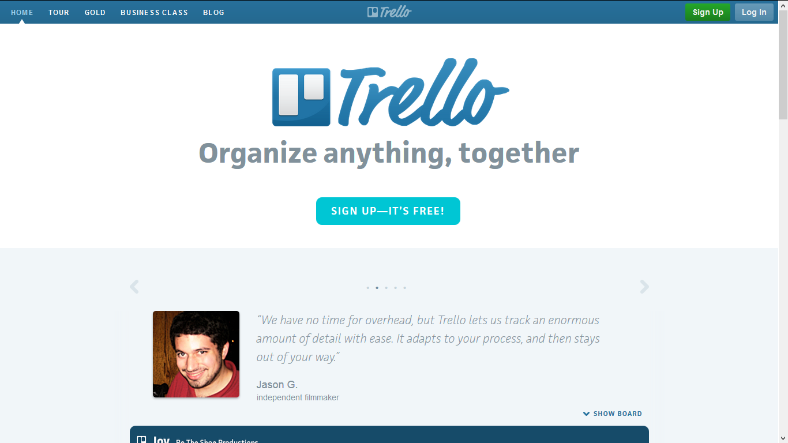
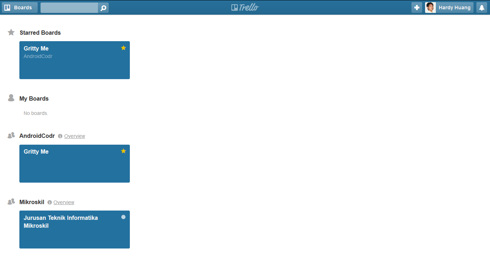
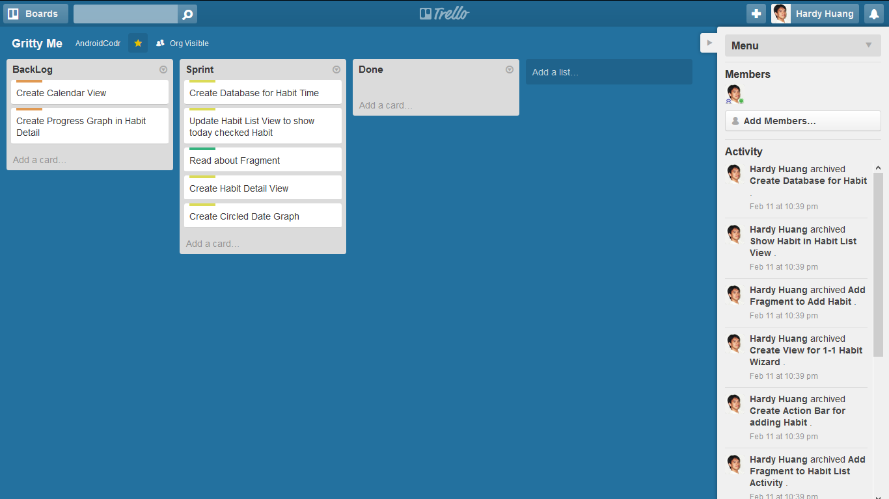
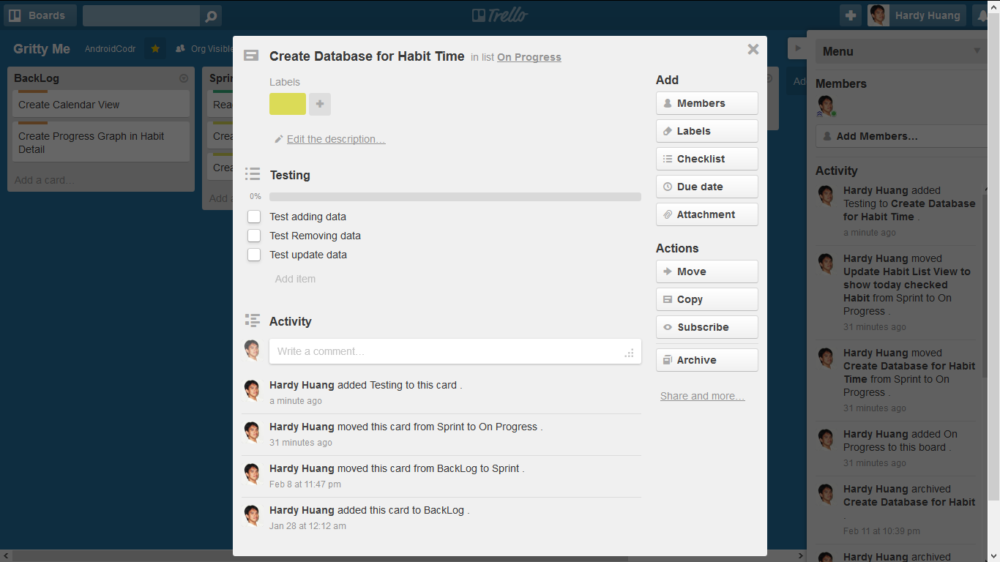
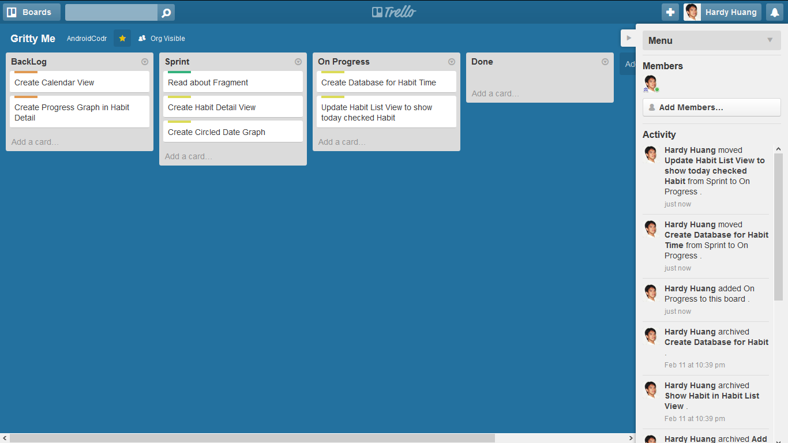
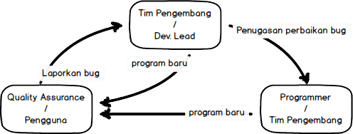
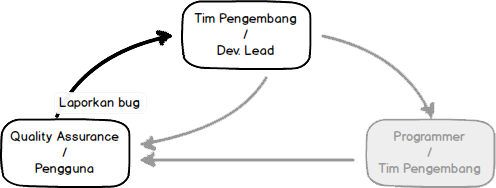
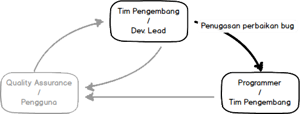
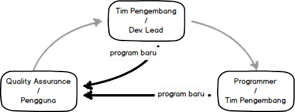

<!DOCTYPE html><html><head><meta charset="utf-8"><meta name="viewport" content="width=device-width, initial-scale=1, maximum-scale=1"><title>TKPPL | User Stories</title><link rel="stylesheet" type="text/css" href="bower_components/prism/themes/prism.css"><link rel="stylesheet" type="text/css" href="bower_components/todc-bootstrap-main/dist/css/bootstrap.min.css"><link rel="stylesheet" type="text/css" href="styles/main-presentation.css"></head><body></body></html><nav role="navigation" class="navbar navbar-default"><div class="container"><div class="navbar-header"><button type="button" data-toggle="collapse" data-target="presentation-chooser" class="navbar-toggle"><span class="sr-only"></span><span class="icon-bar"></span><span class="icon-bar"></span><span class="icon-bar"></span></button><a href="index.html" class="navbar-brand">BotNet</a></div><div id="presentation-chooser" class="collapse navbar-collapse"><ul class="nav navbar-nav"><li class="dropdown"><a data-toggle="dropdown" href="#" class="dropdown-toggle">Pilih Presentasi <b class="caret"></b></a><ul class="dropdown-menu"><li><a href="1-Introduction.html">Pengenalan Botnet</a></li><li><a href="2-CaraKerjaBotnet.html">Cara Kerja Botnet</a></li><li><a href="3-PresentasiDenganBespokeJS.html">Presentasi dengan Bespoke.JS</a></li><li><a href="4-SCRUM.html">SCRUM</a></li><li><a href="5-UserStories.html">User Stories</a></li><li><a href="6-Trello.html">Trello dan Bug Reporting</a></li><li><a href="7-PengenalanKontrolVersi.html">Kontrol Versi</a></li><li><a href="8-DasarKontrolVersi.html">Dasar Kontrol Versi</a></li><li><a href="9-Commit.html">Commit</a></li><li><a href="10-LogDanHistory.html">Log dan History</a></li><li><a href="6-TugasBeSpoke.html">Tugas Be Spoke</a></li><li><a href="11-TimeMachine.html">Time Machine</a></li><li><a href="12-PushDanPull.html">Push dan Pull</a></li><li><a href="13-Branching.html">Branching (Percabangan)</a></li><li><a href="14-GitFlow.html">GitFlow Workflow</a></li></ul></li></ul></div></div></nav><article id="presentation"><section><h1>Trello &amp; Bug Tracking</h1><p>Teknologi Kolaborasi Pengembangan Perangkat Lunak</p></section><section><h2 class="bullet">Tujuan Pembelajaran</h2><hr><ul><li>Mahasiswa memahami penggunaan Trello dalam Scrum dan User Story.</li><li>Mahasiswa memahami penggunaan Bug Reporting.</li></ul></section><section><h1>Trello</h1></section><section><h2 class="bullet">Apa itu Trello?</h2><hr><ul><li>Trello merupakan aplikasi manajemen proyek yang dikembangkan oleh Fog Creek Software</li><li>Trello pada dasarnya menggunakan sebuah paradigma manajemen proyek yang bernama Kanban.</li><li>Trello gratis digunakan selama </li></ul></section><section><h2 class="bullet">Trello</h2></section><section><h2 class="bullet">Bagaimana cara kerja Trello?</h2><hr><ul><li>Dalam Trello proyek direpresentasikan sebagai "board".</li><li>Setiap "board" mengandung "list".</li><li>Setiap "list" mengandung "card".</li><li>"Card" merepresentasikan item kita, bisa berupa user story dan sebagainya.</li><li>Kita memindahkan "card" dari satu "list" ke "list" lain dalam satu "board".</li></ul></section><section><h2 class="bullet">Board dalam Trello</h2></section><section><h2 class="bullet">List dan Card dalam Trello</h2></section><section><h2 class="bullet">Back of the Card</h2><p>Setiap "card" di Trello bisa memuat banyak informasi berharga. </p></section><section><h2 class="bullet">Detil dari Card</h2><hr><ul><li>Members -- Bisa digunakan untuk menset anggota development team yang mengerjakan User Story tersebut.</li><li>Labels -- Bisa digunakan untuk memberi tanda kepada card.</li><li>Checklist -- Bisa digunakan untuk me-list-kan pengujian yang harus dilakukan sebelum card dipindahkan ke done.</li><li>Due Date -- Bisa digunakan untuk menset limit waktu pengerjaan user story.</li><li>Attachment -- Bisa digunakan untuk informasi penting lainnya.</li></ul></section><section><h2 class="bullet">Trello dan SCRUM</h2><p>Ada beberapa cara memanfaatkan Trello sebagai perangkat SCRUM</p><hr><ol><li>Menggunakan satu board (untuk proyek kecil)</li><li>Menggunakan beberapa board (untuk proyek besar) </li></ol></section><section> <h2 class="bullet">Trello Satu Board</h2><hr><ul><li>Backlog, dan Sprint Backlog masing-masing dibuat dalam satu list di board yang sama.</li><li>Terdapat dua list tambahan yang "On Progress" dan "Done"</li><li>Setiap Backlog dan Sprint Backlog memuat User Story.</li></ul></section><section><h2 class="bullet">Trello 1 board</h2></section><section><h2 class="bullet">Trello Satu Board (lanjutan)</h2><hr><ul><li>Di awal Sprint Planning, User Story dalam Backlog dipindahkan ke Sprint Backlog.</li><li>Sprint Backlog memuat semua user story yang harus diselesaikan.</li><li>Setiap kali anggota development team akan mengerjakan satu card, card tersebut dipindahkan ke "In Progress" list.</li><li>Jika sudah selesai dipindahkan ke "Done" list.</li><li>Jika sprint sudah selesai maka di-archive dan buat card baru.</li></ul></section><section><h2 class="bullet">Trello Beberapa Board</h2><p>Jika Proyek besar atau tim banyak.</p><p>Dengan Satu board, bisa terlalu ribet.</p><p>Kurang detil di setiap board</p></section><section><h2 class="bullet">Trello Beberapa Board (Lanjutan)</h2><ul><li>Satu board khusus untuk Backlog yang terdiri dari "Ideas", "Requirement Gathering", "Ready for Estimating" dan "Sprint Candidates" list</li><li>Satu Board khusus untuk Sprint yang terdiri dari "Sprint Backlog", "In Progress", "QA Bug Report",  "Ready for QA", "Ready for Release" dan "Done".</li></ul></section><section><h2 class="bullet">Backlog Board</h2><ul><li>Product Owner, bertanggung jawab penuh untuk memberi priotisasi di setiap card.</li><li>"Ideas" hanyalah list berisi ide yang masih abstrak.</li><li>"Requirement Gathering" berisi user story yang sedang dibentuk.</li><li>"Ready for Estimating" berisi user story yang sudah dibentuk dan siap diestimasi dan diberi priotisasi.</li><li>"Sprint Candidates" berisi user story yang siap dipindahkan ke Spring Board</li></ul></section><section><h2 class="bullet">Sprint Board</h2><ul><li>"Sprint Backlog" berisikan User Story yang berasal dari Backlog board. Diurut berdasar prioritas.</li><li>"In Progress" berisikan User Story yang sedang dikembangkan oleh Development Team.</li><li>"QA bug report" berisikan user story yang masih terdapat bug. Dipindahkan oleh Tester.</li><li>"Ready for QA" berisikan user story yang selesai dikembangkan dan siap untuk dites oleh Tester.</li><li>"Ready for Release" berisikan user story yang sudah diuji oleh Tester dan siap untuk direlease.</li><li>"Done" berisikan user story yang sudah dirilis.</li></ul></section><section><h1>Bug Tracking</h1></section><section><h2>Bug?</h2><blockquote>A software bug is an error, flaw, failure, or fault in a computer program 
or system that causes it to produce an incorrect or unexpected result, or 
to <b>behave in unintended ways</b>.
<small>Wikipedia</small>
</blockquote></section><section><h2 class="bullet">Bug Tracking?</h2><hr><ul><li>Dalam tahap testing maupun maintenance, seringkali kita menemukan bug</li><li>Kesalahan dan perbaikannya perlu dicatat agar kesalahan tidak terjadi dua kali</li><li>Untuk mencatat digunakan software "Bug Tracking"</li><li>Contoh software bug tracking populer: <a href="www.mantisbt.org">Mantis</a>, <a href="http://www.bugzilla.org/">BugZilla</a></li><li>Seringkali di-bundle bersamaan dengan sistem manajemen pengembangan (<a href="http://github.com/">github</a>, <a href="http://www.redmine.org/">redmine</a>)</li></ul></section><section><h2>Proses Pelaporan Bug</h2></section><section><h2>Langkah 1: User / QA Melaporkan Bug ke Tim</h2></section><section><h2>Langkah 2: Tim Menentukan Siapa yg Memperbaiki Bug</h2></section><section><h2>Langkah 3: Berikan Hasil Perbaikan Bug ke User / QA</h2></section><section><h2>Contoh Sistem Bug Report</h2><p><a href="https://github.com/ValveSoftware/source-sdk-2013/issues">Github Bug Report</a></p></section><section><h2>Menulis Bug Report yang Baik</h2></section><section><h2 class="bullet">Sebelum Menulis Bug Report</h2><hr><p>Pastikan terlebih dahulu:</p><ol><li>Bug belum pernah dilaporkan (gunakan search)</li><li>Software sudah versi paling baru</li></ol></section><section><h2 class="bullet">Bug Report yang Baik</h2><hr><p>Bug report yang baik memiliki komponen berikut:</p><ol><li>Ringkasan (deskripsi) bug yang jelas</li><li>Langkah reproduksi bug yang jelas</li><li>Stacktrace / Error Code jika terdapat exception</li></ol></section><section><h2 class="bullet">Ringkasan Bug</h2><hr><ul><li>Jelaskan masalah yang muncul secara singkat</li><li>Jangan berikan solusi</li><li>Jangan menghakimi / menyerang tim pengembang</li></ul></section><section><h2 class="bullet">Ringkasan Bug</h2><hr><ul><li>Baik: "Membatalkan dialog File Copy membuat sistem berhenti bekerja"</li><li>Buruk: "Software crash. Sistem tidak beres. Pengembang tidak kompeten."</li></ul></section><section><h2 class="bullet">Langkah Reproduksi Bug</h2><hr><ol><li><b>Bagian paling penting</b> dari Bug Report</li><li>Kalau pengembang tidak bisa mereproduksi bug, akan sulit memperbaiki bug</li><li>Harus detil sedetil-detilnya</li><li>Lebih baik kalau ditulis langkah demi langkah</li><li>Tuliskan apa yang diharapkan terjadi, dan apa yang sebenarnya terjadi</li></ol></section><section><h2 class="bullet">Langkah Reproduksi Bug (Buruk)</h2><hr><ol><li>Buka Gmail pada Firefox</li><li>Tampilan rusak</li></ol></section><section><h2 class="bullet">Langkah Reproduksi Bug (Baik)</h2><hr><ol><li>Tekan Ctrl+N untuk membuka jendela baru pada Firefox</li><li>Isikan https://mail.google.com pada Address Bar dan tekan Enter</li><li>Diharapkan: tampilan inbox Gmail</li><li>Yang muncul: pesan kesalahan "Your browser does not support cookies (error -91)"</li></ol></section></article><script src="bower_components/bespoke.js/dist/bespoke.min.js"></script><script src="bower_components/bespoke-bullets/dist/bespoke-bullets.min.js"></script><script src="bower_components/bespoke-scale/dist/bespoke-scale.min.js"></script><script src="bower_components/bespoke-hash/dist/bespoke-hash.min.js"></script><script src="bower_components/bespoke-progress/dist/bespoke-progress.min.js"></script><script src="bower_components/bespoke-state/dist/bespoke-state.min.js"></script><script src="bower_components/prism/prism.js"></script><script src="bower_components/prism/components/prism-bash.min.js"></script><script src="scripts/main.js"></script><script src="bower_components/jquery/jquery.min.js"></script><script src="bower_components/todc-bootstrap-main/dist/js/bootstrap.min.js"></script>